sector70 supernovae (30 total)
Each figure has three panels. The top panel shows the transient light curve, the middle panel shows the local background (estimated in an annulus), and the bottom panel shows a "background-model corrected" light curve. Details about the background model are in the README.
The vertical red line marks the time of discovery reported to TNS. Other useful metadata from TNS is in the figure title.
Note that the top and bottom panel are in magnitudes, while the middle panel is in differential flux units. The magnitudes are calibrated to the flux in the reference image used for image subtraction. Thus, flux from the host galaxy is included in these magnitudes.
3-sigma upper limits are plotted as triangles with no errorbars. A typical limiting magnitude is 19.6 in 30 minutes or 18.4 in 200 seconds (for low backgrounds).
The links allow you to download the light curve data as a text file.
More details in the README.
2023tqb 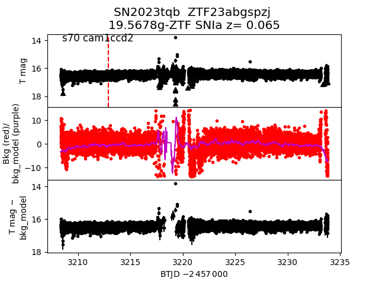 2023vpe 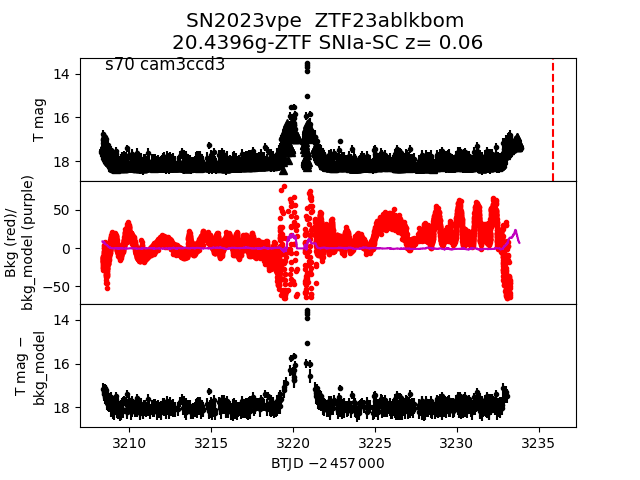 2023wea 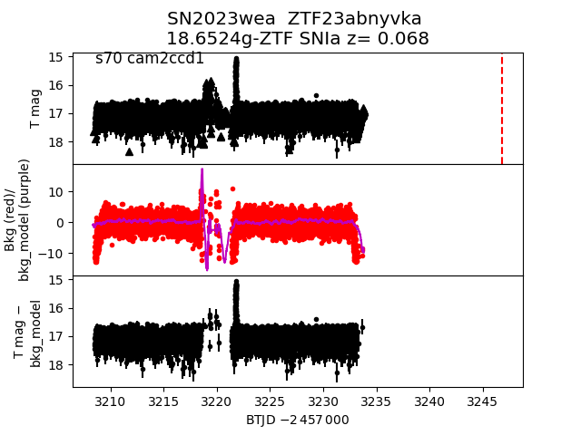 2023wbw 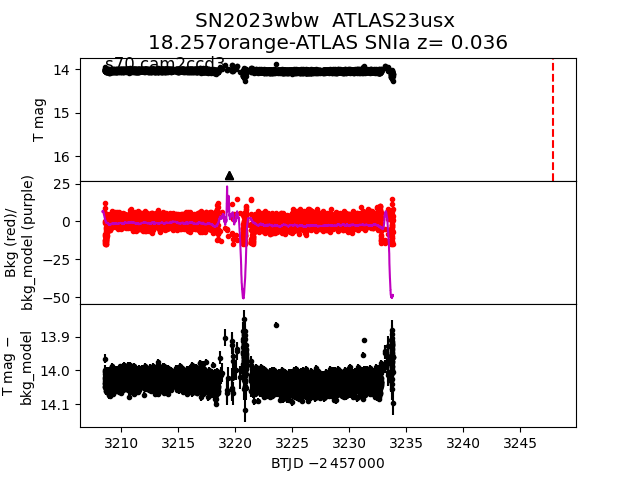 2023abbm 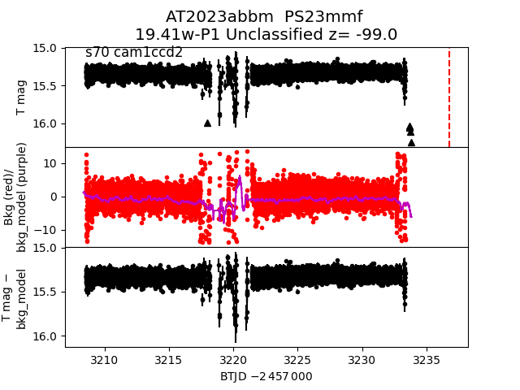 2023wqq 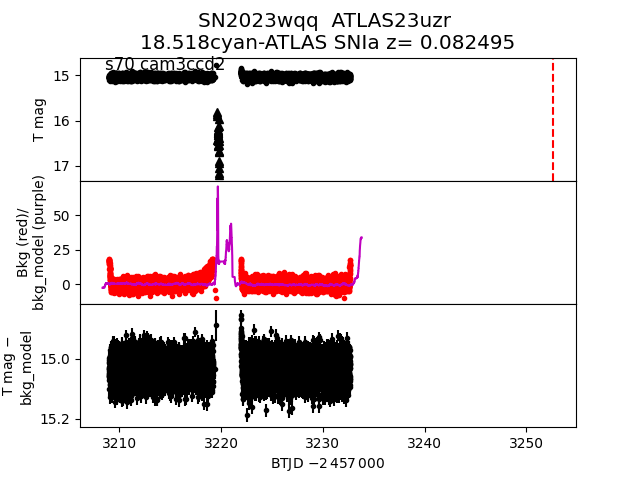 2023ujk 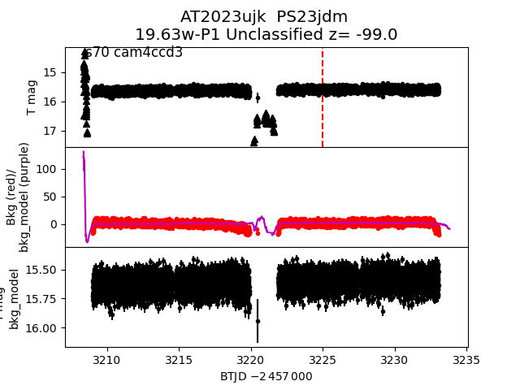 2023wts 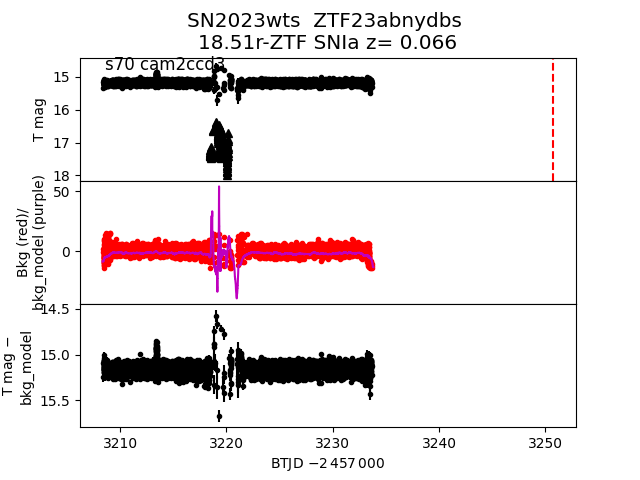 2023vag 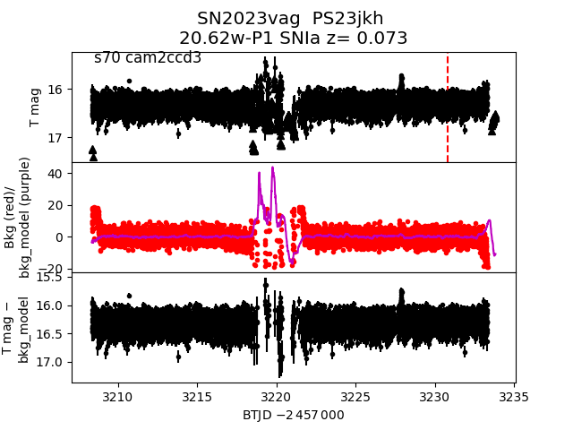 2023tsy 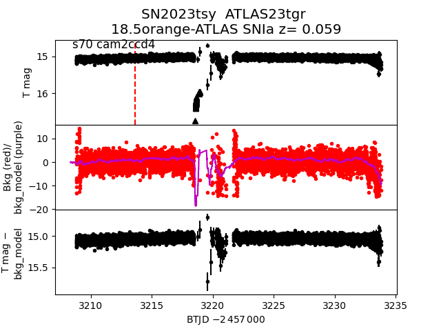 2023vpo 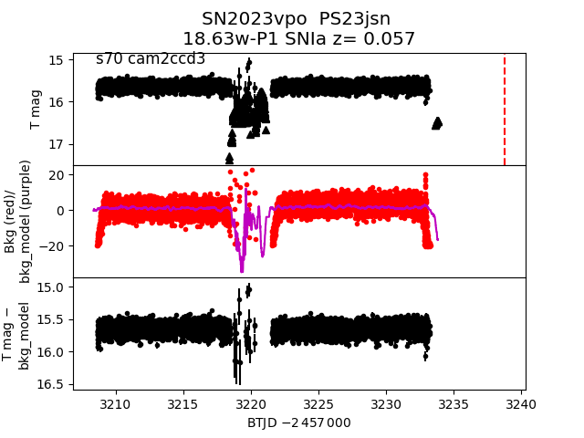 2023vjh 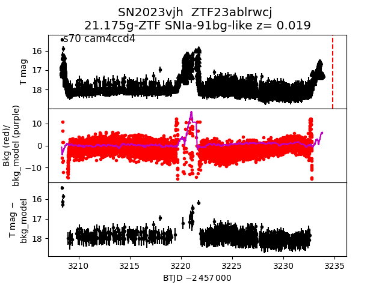 2023wbt 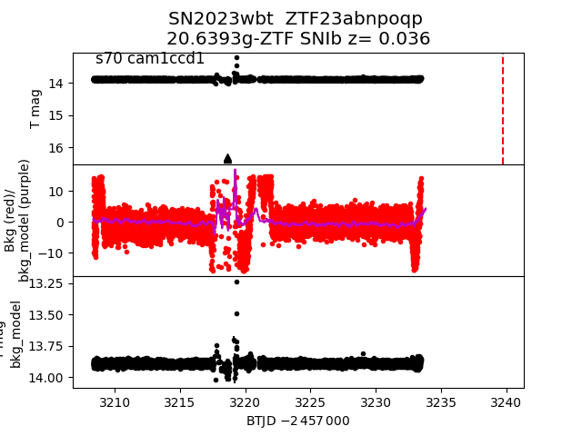 2023wcq 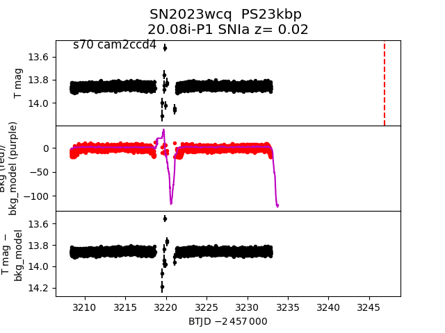 2023urr 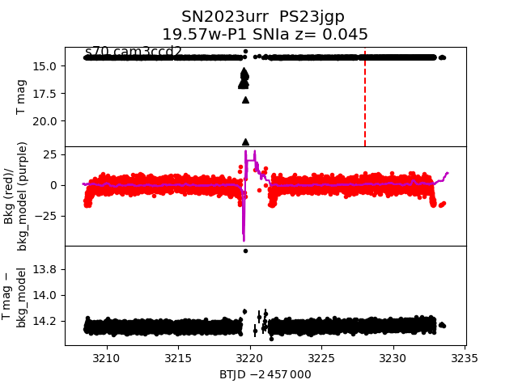 2023xxh 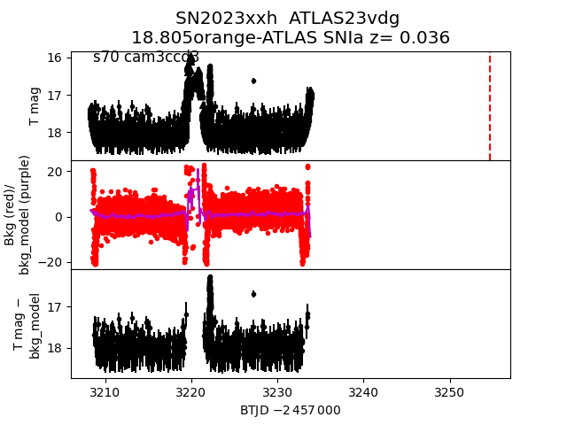 2023tso 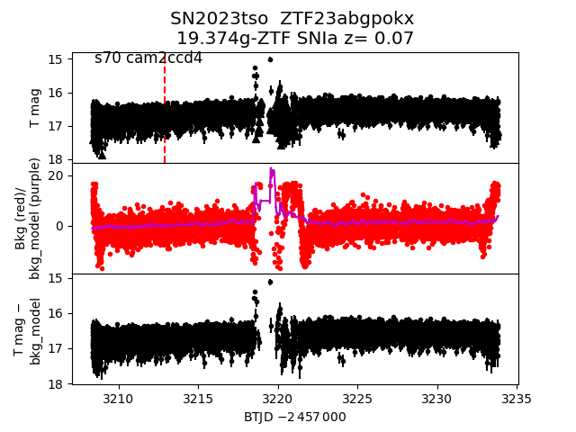 2023uei 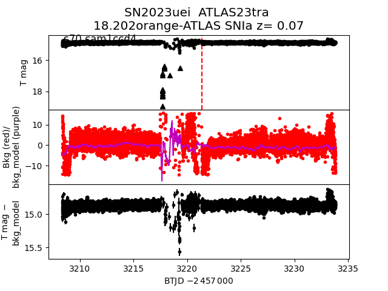 2023tyl 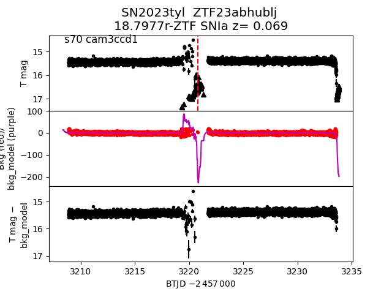 2023umd 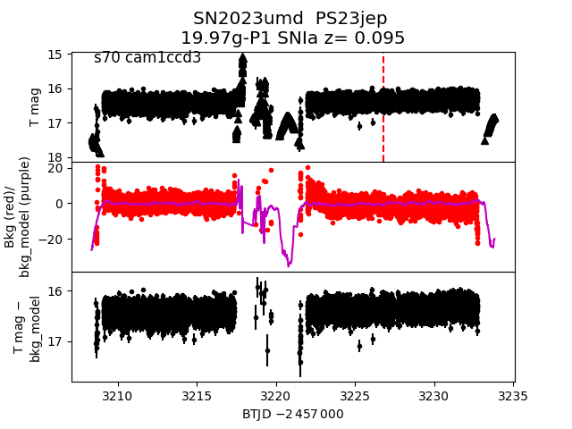 2023ulo 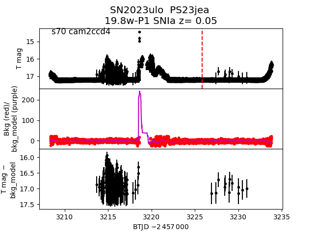 2023xob 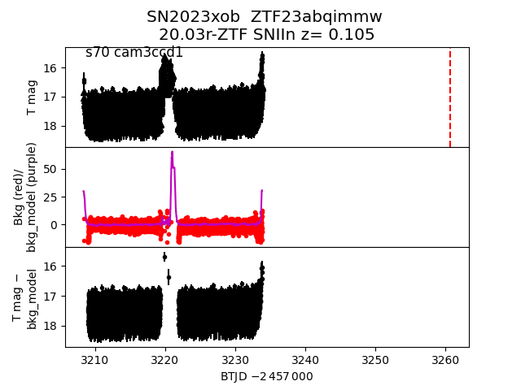 2023xhb 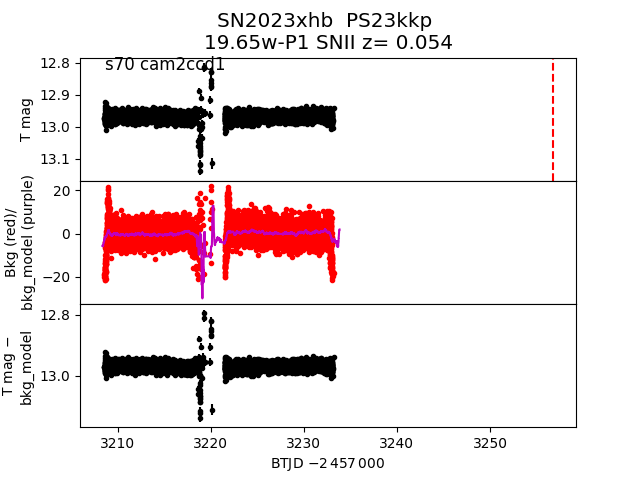 2023xqt 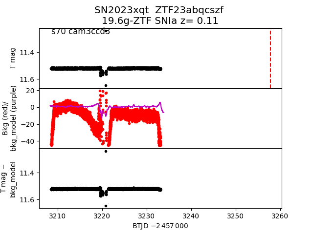 2023tqc 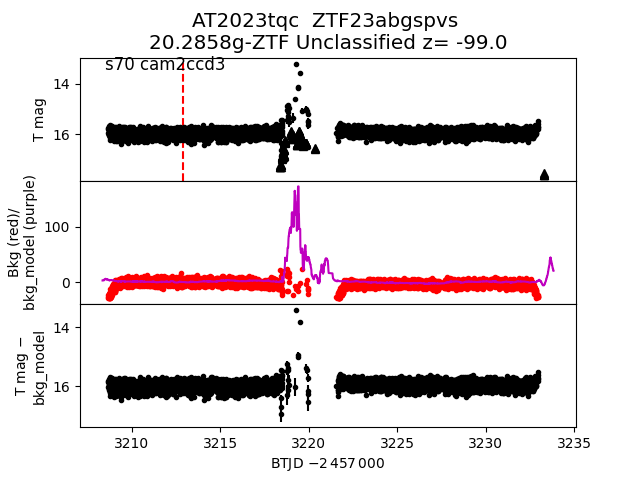 2023wcy 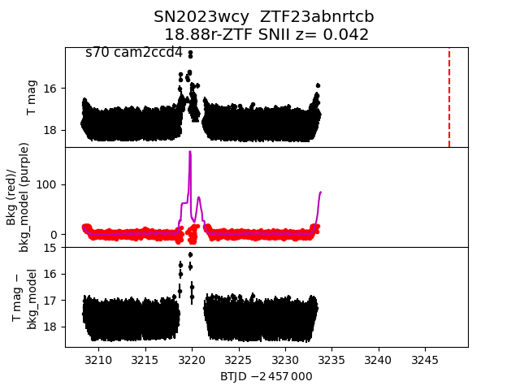 2023vdr 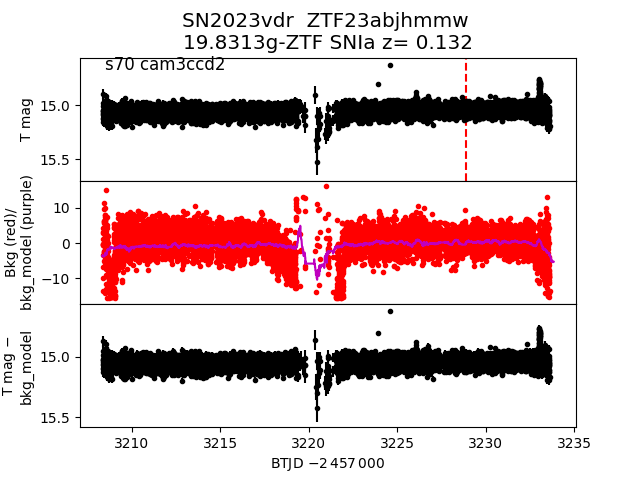 2023ubm 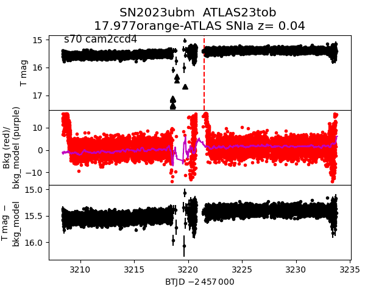 2023wtq 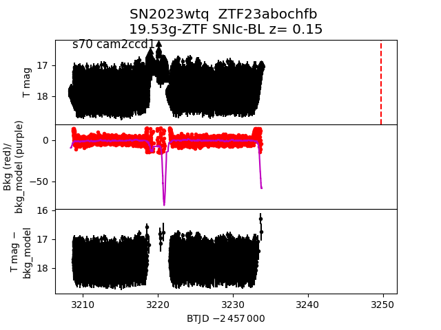 2023xlu 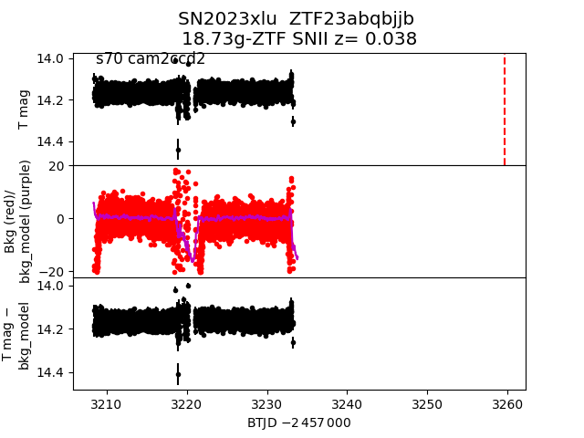